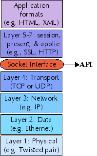

by David Mertz, Ph.D. <mertz@gnosis.cx>
(see also Part One of this tutorial)
IP sockets are the lowest level layer upon which high level internet protocols are built--every thing from HTTP, to SSL, to POP3, to Kerberos, to UDP-Time. To implement custom protocols, or to customize implementation of well-known protocols, a programmer needs a working knowledge of the basic socket infrastructure. A similar API is available in many languages; this tutorial uses C programming as a ubiquitous low-level language, and Python as a representative higher-level language for examples.
Readers of the first part of this tutorial were introduced to the basics of programming custom network tools using the widespread and cross-platform Berkeley Sockets Interface. This tutorial picks up with further explanation of User Datagram Protocol (UDP), and continues with discussion of writing scalable socket servers.
This tutorial is best suited for readers with a minimal level of knowledge of C and Python . However, readers who are not familiar with either programming language should be able to make it through with a bit of extra effort; most of the underlying concepts will apply equally to other programming languages, and calls will be quite similar in most high-level scripting languages like Ruby, Perl, TCL, etc.
While this tutorial introduces the basic concepts behind IP (internet protocol) networks, it certainly does not hurt readers to have some prior acquaintance with the concept of network protocols and layers.
David Mertz is a writer, a programmer, and a teacher, who always endeavors to improve his communication to readers (and tutorial takers). He welcomes any comments, please direct them to <mertz@gnosis.cx> .
David also wrote the book Text Processing in Python which readers can read online at http://gnosis.cx/TPiP/
The next couple panels contain a quick recap of the discussion in part I of this tutorial--if you already read that, you can skip forward through the next few panels.
A computer network is composed of a number of "network layers" , each providing a different restriction and/or guarantee about the data at that layer. The protocols at each network layer generally have their own packet formats, headers, and layout.
The seven traditional layers of a network are divided into two groups: upper layers and lower layers. The sockets interface provides a uniform API to the lower layers of a network, and allows you to implement upper layers within your sockets application. Further, application data formats may themselves constitute further layers.
While the sockets interface theoretically allows access to protocol families other than IP, in practice, every network layer you use in your sockets application will use IP. For this tutorial we only look at IPv4; in the future IPv6 will become important also, but the principles are the same. At the transport layer, sockets support two specific protocols: TCP (transmission control protocol) and UDP (user datagram protocol).
Sockets cannot be used to access lower (or higher) network layers; for example, a socket application does not know whether it is running over ethernet, token ring, 802.11b, or a dialup connection. Nor does the sockets pseudo-layer know anything about higher-level protocols like NFS, HTTP, FTP, and the like (except in the sense that you might yourself write a sockets application that implements those higher-level protocols).
At times, the sockets interface is not your best choice for a network programming API. Many excellent libraries exist (in various languages) to use higher-level protocols directly, without having to worry about the details of sockets. While there is nothing wrong with writing you own SSH client, for example, there is not need to do so simply to let an application transfer data securely. Lower-level layers than those sockets address fall pretty much in the domain of device driver programming.
As the last panel indicated, when you program a sockets application, you have a choice to make between using TCP and using UDP. Each has its own benefits and disadvantages.
TCP is a stream protocol, while UDP is a datagram protocol. That is to say, TCP establishes a continuous open connection between a client and a server, over which bytes may be written--and correct order guaranteed--for the life of the connection. However, bytes written over TCP have no built-in structure, so higher-level protocols are required to delimit any data records and fields within the transmitted bytestream.
UDP, on the other hand, does not require that any connection be established between client and server, it simply transmits a message between addresses. A nice feature of UDP is that its packets are self-delimiting--each datagram indicates exactly where it begins and ends. UDP, however, provides no guarantee that packets will arrive in-order, or even at all. Higher-level protocols built on top of UDP may, of course, provide handshaking and acknowledgements.
A useful analogy for understanding the difference between TCP and UDP is the difference between a telephone call and posted letters. The telephone call is not active until the caller "rings" the receiver and the receiver picks up. On the other hand, when you send a letter, the post office starts delivery without any assurance the recipient exists, nor any strong guarantee about how long delivery will take. The recipient may receive various letters in a different order than they were sent, and the sender may receive mail interspersed in time with those she sends. Unlike with the USPS, undeliverable mail always goes to the dead letter office, and is not returned to sender.
Beyond the protocol--TCP or UDP--there are two things a peer (a
client or server) needs to know about the machine it communicates
with: An IP address and a port. An IP address is a 32-bit data
value, usually represented for humans in "dotted quad" notation,
e.g., 64.41.64.172 . A port is a 16-bit data value,
usually simply represented as a number less than 65536--most often
one in the tens or hundreds range. An IP address gets a packet
to a machine, a port lets the machine decide which
process/service (if any) to direct it to. That is a slight
simplification, but the idea is correct.
The above description is almost right, but it misses something.
Most of the time when humans think about an internet host (peer),
we do not remember a number like 64.41.64.172 , but
instead a name like gnosis.cx . The first part of
this tutorial demonstrated the use of DNS and local lookups to
find IP addresses from domain names.
As in the first part of this tutorial, my examples for both
clients and servers will use one of the simplest possible
applications: one that sends data and receives the exact same
thing back. In fact, many machines run an "echo server" for
debugging purposes; this is convenient for our initial client,
since it can be used before we get to the server portion
(assuming you have a machine with echod
running).
I would like to acknowledge the book TCP/IP Sockets in C by Donahoo and Calvert (see Resources). I have adapted several examples that they present. I recommend the book--but admittedly, echo servers/clients will come early in most presentations of sockets programming.
Readers of the first part of the tutorial have already seen a TCP echo client in detail. So let us jump into a similar client based on UDP istead.
We will get to clients and servers in C below. But it is
easier to start with far less verbose versions in Python, and see
the overall structure. The first thing we need before we can test
a client UDPecho application is to get a server
running, for the client to talk to. Python, in fact, gives us the
high-level SocketServer module that lets us write
socket servers with minimal customization needed:
#!/usr/bin/env python
"USAGE: %s <port>"
from SocketServer import DatagramRequestHandler, UDPServer
from sys import argv
class EchoHandler(DatagramRequestHandler):
def handle(self):
print "Client connected:", self.client_address
message = self.rfile.read()
self.wfile.write(message)
if len(argv) != 2:
print __doc__ % argv[0]
else:
UDPServer(('',int(argv[1])), EchoHandler).serve_forever()
The various specialized SocketServer classes all
require you to provide an appropriate .handle() method.
But in the case of DatagramRequestHandler , you get
convenient pseudo-files self.rfile and
self.wfile to read and write, respectively, from the
connecting client.
Writing a Python client generally involves starting with the
basic socket module. Fortunately, it is so easy to
write the client that there would hardly be any purpose in using a
higher-level starting point. Note, however, that frameworks like
Twisted include base classes for these sorts of tasks, almost as a
passing thought. Let us look at a socket based UDP
echo client:
#!/usr/bin/env python
"USAGE: %s <server> <word> <port>"
from socket import * # import *, but we'll avoid name conflict
from sys import argv, exit
if len(argv) != 4:
print __doc__ % argv[0]
exit(0)
sock = socket(AF_INET, SOCK_DGRAM)
messout = argv[2]
sock.sendto(messout, (argv[1], int(argv[3])))
messin, server = sock.recvfrom(255)
if messin != messout:
print "Failed to receive identical message"
print "Received:", messin
sock.close()
If you happen to recall the TCP echo client from the first
part, you will notice a few differences here. The socket created
in this case is of type SOCK_DGRAM rather than SOCK_STREAM . But more interesting is the connectionless
nature of UDP. Rather than make a connection and call the .send() and .recv() method repeatedly until the
transmission is complete, for UDP we use just one
.sendto() and one .recvfrom() to send
and fetch a message (a datagram).
Since there is no connection involved, you need to pass the
destination address as part of the .sendto() call. In
Python, the socket object keeps track of the temporary socket
number over which the message actually passes. We will see later
that in C you will need to use this number from a variable
returned by sendto()
Running the server and the client are straightforward. The server is launched with a port number:
$ ./UDPechoserver.py 7 &
[1] 23369
The client gets three arguments: server address, string to echo, and the port. Being that Python wraps up more in its standard modules than do roughly equivalent C libraries, you can specify a named address just as well as an IP address. In C you would need to perform a lookup yourself, perhaps first testing whether the argument looked like a dotted quad or a domain name:
$ ./UDPechoclient.py
USAGE: ./UDPechoclient.py <server> <word> <port>
$ ./UDPechoclient.py 127.0.0.1 foobar 7
Client connected: ('127.0.0.1', 51776)
Received: foobar
$ ./UDPechoclient.py localhost foobar 7
Client connected: ('127.0.0.1', 51777)
Received: foobar
There is something else interesting to notice in this client
session. Of course, since I launched the server and client in the
same terminal, the output of both are interspersed. But more
interesting is the client_address that is echo'd.
Each new connection establishes a new socket number (they could be
reused, but the point is you do not know in advance). Port 7 is
merely used to recognize the request to send a message, a new
ad hoc socket is used for the actual data.
It does not take any more lines of code to write a Python UDP
server using the socket module than it did with
SocketServer , but the coding style is much more
imperative (and C-like, actually):
#!/usr/bin/env python
"USAGE: %s <server> <word> <port>"
from socket import * # import *, but we'll avoid name conflict
from sys import argv
if len(argv) != 2:
print __doc__ % argv[0]
else:
sock = socket(AF_INET, SOCK_DGRAM)
sock.bind(('',int(argv[1])))
while 1: # Run until cancelled
message, client = sock.recvfrom(256) # <=256 byte datagram
print "Client connected:", client
sock.sendto(message, client)
Usage and behavior is exactly the same as the prior
UDPechoserver.py , but we manage the loop and the
client connections ourselves rather than having a class take care
of it for us. As before ad hoc ports are used to transmit
the actual message--the client returned from
sock.recvfrom() contains the temporary port
number:
$ ./UDPechoserver2.py 8 &
[2] 23428
$ ./UDPechoclient.py localhost foobar 8
Client connected: ('127.0.0.1', 51779)
Received: foobar
The first few lines of our UDP client are identical to those for the TCP client. Mostly we just use some includes for socket functions, or other basic I/O functions.
#include <stdio.h>
#include <sys/socket.h>
#include <arpa/inet.h>
#include <stdlib.h>
#include <string.h>
#include <unistd.h>
#include <netinet/in.h>
#define BUFFSIZE 255
void Die(char *mess) { perror(mess); exit(1); }
There is not too much to the setup. It is worth noticing that the buffer size we allocate is much larger than it was in the TCP version (but still finite in size). TCP can loop through the pending data, sending a bit more over an open socket on each loop. For this UDP version, we want a buffer that is large enough to hold the entire message, which we send in a single datagram (it can be smaller than 255, but not any larger). A small error function is also defined.
At the very start of the main() function we
allocate two sockaddr_in structures, a few integers
to hold string sizes, another int for the socket handle, and a
buffer to hold the returned string. After that, we check that
the command-line arguments look mostly correct.
int main(int argc, char *argv[]) {
int sock;
struct sockaddr_in echoserver;
struct sockaddr_in echoclient;
char buffer[BUFFSIZE];
unsigned int echolen, clientlen;
int received = 0;
if (argc != 4) {
fprintf(stderr, "USAGE: %s <server_ip> <word> <port>\n", argv[0]);
exit(1);
}
A contrast with the Python code comes up already here. For
this C client, you must use a dotted-quad IP address. In
Python, all the socket module functions handle name
resolution behind the scenes. If you wanted to do a lookup in the
C client, you would need to program a DNS function--such as the
one presented in the first part of this tutorial.
In fact, it would not be a terrible idea to check that the IP address passed in as the server IP address really looks like a dotted-quad address. If you forgetfully pass in a named address, you will probably receive the somewhat misleading error: "Mismatch in number of sent bytes: No route to host" (see below for where this message is produced). Any named address amounts to the same thing as an unused or reserved IP address (which a simple pattern check could not rule out, of course).
The arguments to the socket() call decide the type
of socket: PF_INET just means it uses IP (which you
always will); SOCK_DGRAM and IPPROTO_UDP
go together for a UDP socket. In preparation for sending the
message to echo, we populate the intended server's structure,
using the command-line arguments.
/* Create the UDP socket */
if ((sock = socket(PF_INET, SOCK_DGRAM, IPPROTO_UDP)) < 0) {
Die("Failed to create socket");
}
/* Construct the server sockaddr_in structure */
memset(&echoserver, 0, sizeof(echoserver)); /* Clear struct */
echoserver.sin_family = AF_INET; /* Internet/IP */
echoserver.sin_addr.s_addr = inet_addr(argv[1]); /* IP address */
echoserver.sin_port = htons(atoi(argv[3])); /* server port */
The value returned in the call to socket() is a
socket handle is similar to a file handle; specifically, if the
socket creation fails, it will return -1 rather than a positive
numbered handle. Support functions inet_addr() and
htons() (and atoi() ) are used to convert
the string arguments into appropriate data structures.
For what it does, this UDP client is a bit simpler than was the
similar TCP echo client presented in the first part of this
tutorial series. As we saw with the Python versions, sending a
message is not based on first establishing a connection. You
simply send it to a specified address using sendto() ,
rather than with send() on an established connection.
Of course, this requires an extra couple arguments to indicate the
intended server address.
/* Send the word to the server */
echolen = strlen(argv[2]);
if (sendto(sock, argv[2], echolen, 0,
(struct sockaddr *) &echoserver,
sizeof(echoserver)) != echolen) {
Die("Mismatch in number of sent bytes");
}
The error checking in this call usually establishes that a route to the server exists. This is the message raised if a named address is used by mistake, but it also occurs for valid-looking but unreachable IP addresses.
Receiving the data back works pretty much the same way as it
did in the TCP echo client. The only real change is a substitute
a call to recvfrom() for the TCP call to
recv()
/* Receive the word back from the server */
fprintf(stdout, "Received: ");
clientlen = sizeof(echoclient);
if ((received = recvfrom(sock, buffer, BUFFSIZE, 0,
(struct sockaddr *) &echoclient,
&clientlen)) != echolen) {
Die("Mismatch in number of received bytes");
}
/* Check that client and server are using same socket */
if (echoserver.sin_addr.s_addr != echoclient.sin_addr.s_addr) {
Die("Received a packet from an unexpected server");
}
buffer[received] = '\0'; /* Assure null terminated string */
fprintf(stdout, buffer);
fprintf(stdout, "\n");
close(sock);
exit(0);
}
The structure echoserver had been configured with
an ad hoc port during the call to sendto() ; in
turn, the echoclient structure gets similarly filled
in with the call to recvfrom() . This lets us compare
the two addresses--if some other server or port sends a datagram
while we are waiting to receive the echo. We guard at least
minimally against stray datagrams that do not interest us (we
might have checked the .sin_port members also, to be
completely certain).
At the end of the process, we print out the datagram that came back, and close the socket.
Even more than with TCP applications, UDP clients and servers
are quite similar to each other. In essence, either one consists
mainly of some sendto() and recvfrom()
calls mixed together. The main difference for a server is simply
that it usually puts its main body in an indefinite loop to keep
serving.
Let us start out with the usual includes and error function:
#include <stdio.h>
#include <sys/socket.h>
#include <arpa/inet.h>
#include <stdlib.h>
#include <string.h>
#include <unistd.h>
#include <netinet/in.h>
#define BUFFSIZE 255
void Die(char *mess) { perror(mess); exit(1); }
Again, not much is new in the UDP echo server's declarations and usage message. We need a socket structure for the server and client, and a few variables that will be used to verify transmission sizes; and, of course, the buffer to read and write the message.
int main(int argc, char *argv[]) {
int sock;
struct sockaddr_in echoserver;
struct sockaddr_in echoclient;
char buffer[BUFFSIZE];
unsigned int echolen, clientlen, serverlen;
int received = 0;
if (argc != 2) {
fprintf(stderr, "USAGE: %s <port>\n", argv[0]);
exit(1);
}
The first real difference between UDP client and server comes
in the need to bind the socket on the server side. We saw this
already with the Python example, and the situation is the same
here. The server socket is not the actual socket the message is
transmitted over; rather, it acts as a factory for an ad hoc socket which is configured in the recvfrom()
call we will see soon.
/* Create the UDP socket */
if ((sock = socket(PF_INET, SOCK_DGRAM, IPPROTO_UDP)) < 0) {
Die("Failed to create socket");
}
/* Construct the server sockaddr_in structure */
memset(&echoserver, 0, sizeof(echoserver)); /* Clear struct */
echoserver.sin_family = AF_INET; /* Internet/IP */
echoserver.sin_addr.s_addr = htonl(INADDR_ANY); /* Any IP address */
echoserver.sin_port = htons(atoi(argv[1])); /* server port */
/* Bind the socket */
serverlen = sizeof(echoserver);
if (bind(sock, (struct sockaddr *) &echoserver, serverlen) < 0) {
Die("Failed to bind server socket");
}
Readers will also notice that the echoserver
structure is configured a bit differently. In order to allow
connection on any IP address the server hosts, we use the special
constant INADDR_ANY for the member
.s_addr .
The heavy lifting--such as it is--in the UDP sever is its main
loop. Basically, we perpetually wait to receive a message in a
recvfrom() call. When this happens, the
echoclient structure is populated with relevant
members for the connecting socket. We then use that structure in
the subsequent sendto() call.
/* Run until cancelled */
while (1) {
/* Receive a message from the client */
clientlen = sizeof(echoclient);
if ((received = recvfrom(sock, buffer, BUFFSIZE, 0,
(struct sockaddr *) &echoclient,
&clientlen)) < 0) {
Die("Failed to receive message");
}
fprintf(stderr,
"Client connected: %s\n", inet_ntoa(echoclient.sin_addr));
/* Send the message back to client */
if (sendto(sock, buffer, received, 0,
(struct sockaddr *) &echoclient,
sizeof(echoclient)) != received) {
Die("Mismatch in number of echo'd bytes");
}
}
}
And that's it! We can receive and send messages forever, reporting connections to the console as we go along. Of course, as we will see in the next section, this arrangement does only one thing at a time, which might be a problem for a server handling many clients (probably not for this simple echo server, but something more complicated might introduce poor latencies).
The servers we have looked at--that do nothing but echo a message--can handle each client request extremely quickly. But more generally, we might expect servers to perform potentially lengthy actions like database lookups, accessing remote resources, or complex computations in order to determine the response for a client. Our "one thing at a time" model does not scale well to multiple clients.
To demonstrate the point, let us look at a slightly modified Python server--one that takes some time to do its job (just to make the point that it is processing the request, we (trivially) modify the message string along the way too:
#!/usr/bin/env python
from socket import *
from sys import argv
def lengthy_action(sock, message, client_addr):
from time import sleep
print "Client connected:", client_addr
sleep(5)
sock.sendto(message.upper(), client_addr)
sock = socket(AF_INET, SOCK_DGRAM)
sock.bind(('',int(argv[1])))
while 1: # Run until cancelled
message, client_addr = sock.recvfrom(256)
lengthy_action(sock, message, client_addr)
In order to give the server some work to do, we can modify the client to make multiple requests (one per thread) that would like to be serviced as quickly as possible:
#!/usr/bin/env python
from socket import *
import sys, time
from thread import start_new_thread, get_ident
start = time.time()
threads = {}
sock = socket(AF_INET, SOCK_DGRAM)
def request(n):
sock.sendto("%s [%d]" % (sys.argv[2],n),
(sys.argv[1], int(sys.argv[3])))
messin, server = sock.recvfrom(255)
print "Received:", messin
del threads[get_ident()]
for n in range(20):
id = start_new_thread(request, (n,))
threads[id] = None
#print id,
while threads: time.sleep(.1)
sock.close()
print "%.2f seconds" % (time.time()-start)
Run against our new "lengthy action" server, the threaded client gets something like the following (abridged) output; note the time it takes, in particular:
$ ./UDPechoclient2.py localhost "Hello world" 7
Received: HELLO WORLD [7]
Received: HELLO WORLD [0]
...
Received: HELLO WORLD [18]
Received: HELLO WORLD [2]
103.96 seconds
Against one of the earlier servers, this client will run in a few seconds (but will not capitalize the returned string, of course); a version without the threading overhead will be even faster against the earlier servers. Assuming our hypothetical server process is not purely CPU-bound, we should be able to be much more responsive than 100+ seconds. Notice also that the threads are not generally serviced in the same order they are created in.
The way we have set up the "lengthy action" server, we guarantee that it takes at least five seconds to service any given client request. But there is no reason that multiple threads cannot be running during those same five seconds. Again, clearly a CPU bound process is not going to be faster through threading, but more often in a real server, those five seconds are spent doing something like a database query against another machine. In other words, we should be able to parallelize serving the several client threads.
An obvious approach here is to thread the server, just as the client is threaded:
#!/usr/bin/env python
from socket import *
from sys import argv
from thread import start_new_thread
# ...definition of 'lenthy_action()' unchanged...
sock = socket(AF_INET, SOCK_DGRAM)
sock.bind(('',int(argv[1])))
while 1: # Run until cancelled
message, client_addr = sock.recvfrom(256)
start_new_thread(lengthy_action, (sock, message, client_addr))
On my test system (using localhost, as before), this brings the
client runtime down to about 9 seconds--five of those spent in the
call to sleep() , the rest with threading and
connection overhead (roughly).
On Unix-like systems, forking is even easier than threading. While processes are nominally "heavier" than threads; on popular Posix systems like Linux, FreeBSD, and Darwin, process creation is still quite efficient.
In Python, a forking version of our "lengthy action" server can be as simple as:
#!/usr/bin/env python
from socket import *
from sys import argv, exit
from os import fork
def lengthy_action(sock, message, client_addr):
from time import sleep
print "Client connected:", client_addr
sleep(5)
sock.sendto(message.upper(), client_addr)
exit()
sock = socket(AF_INET, SOCK_DGRAM)
sock.bind(('',int(argv[1])))
while 1: # Run until cancelled
message, client_addr = sock.recvfrom(256)
if fork():
lengthy_action(sock, message, client_addr)
On my Mac OSX test system, I actually found this forking
version a couple seconds faster than the threaded server;
to my mild surprise. As a slight difference in behavior, after
servicing a collection of client threads, the main process in the
while loop winds up as a background process, even if
the server was launched in the foreground. In the usual case
where you launch the server in the background, the difference is
irrelevant though.
Another technique called asynchronous or
non-blocking sockets is potentially even more efficient
than are threading or forking approaches. The concept behind
asynchronous programming is to keep execution within a single
thread, but poll each open socket to see if it has more data
waiting to be read or written. However, non-blocking sockets are
really only useful for I/O bound processes--the simulation of a
CPU-bound server that we created using sleep() sort
of misses the point. Moreover, non-blocking sockets make a bit
more sense for TCP connections than for UDP ones, since the former
retain an open connection than may still have pending data.
In overview, the structure of an asynchronous peer (client
or server) is a polling loop--usually using the function
select() or some higher-level wrapper to it such as
Python's asyncore . At each pass through the loop,
you check all the open sockets to see which ones are currently
readable and which ones currently writeable. This is quick to
check, and you can simply ignore any sockets that are not
currently ready for I/O actions. This style of socket programming
avoids any overhead associated with threads or processes.
To simulate a low bandwidth connection, we can create a client
that introduces artificial delays in sending data, and dribbles
out its message byte by byte. To simulate many such connections,
we thread multiple connections (each slow). Generally, this
client is similar to the UDPechoclient2.py we saw
above, but in a TCP version:
#!/usr/bin/env python
from socket import *
import sys, time
from thread import start_new_thread, get_ident
threads = {}
start = time.time()
def request(n, mess):
sock = socket(AF_INET, SOCK_STREAM)
sock.connect((sys.argv[1], int(sys.argv[3])))
messlen, received = len(mess), 0
for c in mess:
sock.send(c)
time.sleep(.1)
data = ""
while received < messlen:
data += sock.recv(1)
time.sleep(.1)
received += 1
sock.close()
print "Received:", data
del threads[get_ident()]
for n in range(20):
message = "%s [%d]" % (sys.argv[2], n)
id = start_new_thread(request, (n, message))
threads[id] = None
while threads:
time.sleep(.2)
print "%.2f seconds" % (time.time()-start)
We need a "traditional" TCP server to test our slow client against. In essence, the below is identical to the second (low-level) Python server presented in the first part of this tutorial. The only real difference is that the maximum connections are increased to twenty.
#!/usr/bin/env python
from socket import *
import sys
def handleClient(sock):
data = sock.recv(32)
while data:
sock.sendall(data)
data = sock.recv(32)
newsock.close()
if __name__=='__main__':
sock = socket(AF_INET, SOCK_STREAM)
sock.bind(('',int(sys.argv[1])))
sock.listen(20)
while 1: # Run until cancelled
newsock, client_addr = sock.accept()
print "Client connected:", client_addr
handleClient(newsock)
Let us try running the "slow connection" client against the "one thing at a time" server (abridged output, as before):
$ ./echoclient2.py localhost "Hello world" 7
Received: Hello world [0]
Received: Hello world [1]
Received: Hello world [5]
...
Received: Hello world [16]
37.07 seconds
As with the UDP stress-test client, the threads do not necessarily connect in the order they are launched. Most significantly, however, is to notice that the time it takes to serve all twenty threads is basically the same as the sum of all the introduced delays in writing bytes over the sockets. Nothing is parallelized here, since we need to wait for each individual socket connection to complete.
Now we are ready to see how the function select()
can be used to bypass I/O delays of the sort we just introduced
(or of the kind that arises "in the wild" because of genuinely
slow connections). A few panels ago, the general concept was
discussed; let us look at the specific code:
#!/usr/bin/env python
from socket import *
import sys, time
from select import select
if __name__=='__main__':
while 1:
sock = socket(AF_INET, SOCK_STREAM)
sock.bind(('',int(sys.argv[1])))
print "Ready..."
data = {}
sock.listen(20)
for _ in range(20):
newsock, client_addr = sock.accept()
print "Client connected:", client_addr
data[newsock] = ""
last_activity = time.time()
while 1:
read, write, err = select(data.keys(), data.keys(), [])
if time.time() - last_activity > 5:
for s in read: s.shutdown(2)
break
for s in read:
data[s] = s.recv(32)
for s in write:
if data[s]:
last_activity = time.time()
s.send(data[s])
data[s] = ""
This server is fragile in that it always waits for exactly 20
client connections before select() 's among them. But
we still demonstrate the basic concept of using a tight polling
loop, and reading/writing only when data is available on a
particular socket. The return values of select() is
a tuple of lists of sockets that are readable, writeable, and in
error, respectively. Each of these types are handled within the
loop, as needed.
Using this asynchronous server, by the way, lets the "slow connection" client complete all 20 connections in about 6 seconds, rather than 37 seconds (at least on my test system).
The examples presented for more scaleable servers have all used Python. In truth, the quality of Python's libraries mean that these will not be significantly slower than analogous servers written in C. And for this tutorial, relative brevity of presentation is important.
In presenting the above Python servers, I have stuck to
relatively low-level facilities within Python. Some of the
higher-level modules like asyncore or
SocketServer --or even threading rather
than thread --might provide more "Pythonic"
techniques. These low-level facilities I utilized, however,
remain quite close in structure to the ways you would program the
same things in C. Python's dynamic typing and concise syntax
still save quite a few lines, but a C programmer should be able
to use my examples as outlines for similar C servers.
The server and client presented in this tutorial are simple, but they show everything essential to writing UDP sockets applications in C and in Python. A more sophisticated client or server is, at heart, just one that transmits more interesting data back and forth; the sockets-level code is not much different for these.
The general outlines of performing threading, forking, and asynchronous socket handling are similarly applicable to more advanced servers. Your servers and clients themselves are likely to do more, but your strategies towards scalability will always be one of these three approaches (or a combination of them).
A good introduction to sockets programming in C, is Michael J. Donahoo and Kenneth L. Calvert, TCP/IP Sockets in C , Morgan-Kaufmann, 2001; ISBN: 1-55860-826-5.
The sockets discussed in these tutorials have been unicast sockets, which are certainly more widely used in common internet protocols. However, there is also such a thing as multicast sockets--which connect one transmission to many recipients. Brad Huntting and I have written a series of articles describing issues and technologies around IP multicast
Please let us know whether this tutorial was helpful to you and how we could make it better. We'd also like to hear about other tutorial topics you'd like to see covered.
For questions about the content of this tutorial, contact the author, David Mertz, at mertz@gnosis.cx .